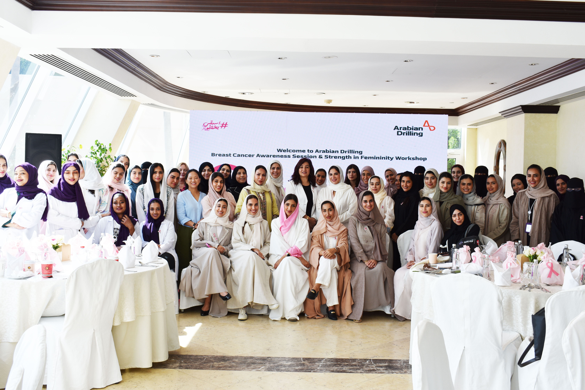
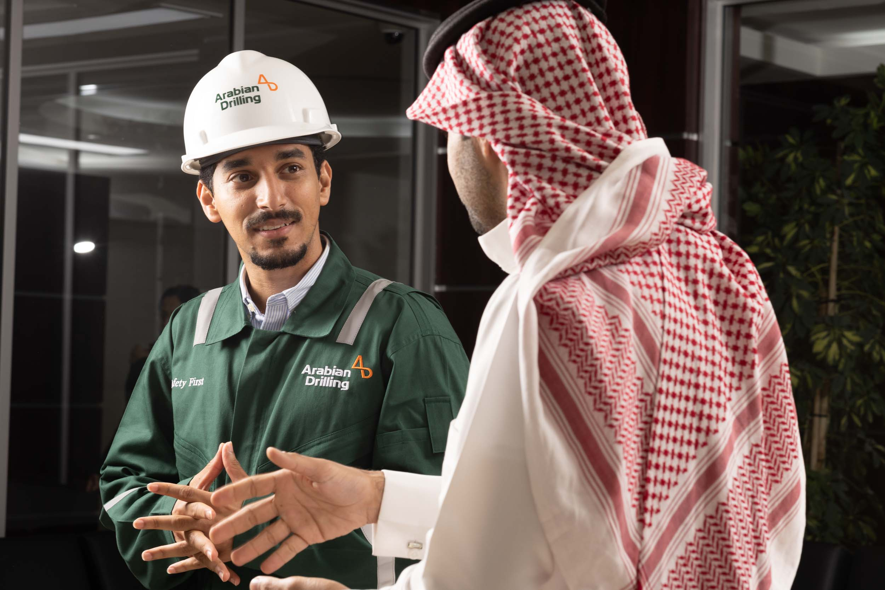

What surprised you in your first months?
I expected to use technical knowledge, but I also learned how important communication is. Understanding the operation and asking clear questions helped me connect theory to real work.
A graduate engineer story about moving from classroom knowledge into real work, feedback, and professional confidence.

Noura joined Arabian Drilling as a graduate engineer after university. Her early assignments introduced her to operational standards, technical coordination, safety expectations, and the teamwork needed to contribute in a drilling environment.
“The transition from university to work became easier because each assignment connected learning to real operations. Feedback from experienced colleagues helped me build confidence.”
Noura’s story reflects how early-career talent can grow when learning is connected to real business needs and practical teamwork.
Read Noura’s full storyNoura shares what helped her move from graduate learning into confident contribution.
I expected to use technical knowledge, but I also learned how important communication is. Understanding the operation and asking clear questions helped me connect theory to real work.
I prepared before meetings, documented what I learned, and followed up on feedback. Small commitments matter when people are deciding whether they can rely on you.
Managers, mentors, and technical colleagues all played a role. The most useful support came from people who explained not only what to do, but why it mattered.
Be patient with the learning curve. Stay curious, ask for feedback, and treat every assignment as a chance to understand the business better.
Additional prototype stories from early-career employees building their path at Arabian Drilling.

HR Graduate Trainee
Lama joined through an early-career pathway and learned how HR supports employees across field, technical, and corporate teams.
“The biggest learning was understanding how people processes affect the employee experience across the whole company.”
Maintenance Graduate Engineer
Omar’s development focused on reliability, maintenance planning, and learning how technical decisions support rig performance.
“Every site visit made the engineering work more real. I could see why planning and discipline matter so much.”
Review graduate programs, internships, and entry-level roles built for early-career professionals.